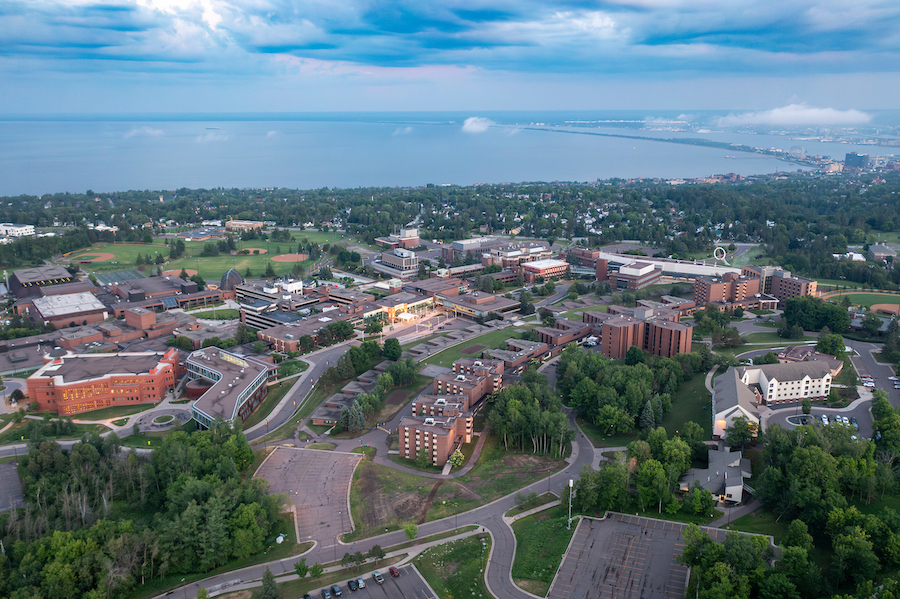

University of Minnesota Duluth

Why go to UMD?
A Premier Educational Experience
At the University of Minnesota Duluth, I've found an ideal environment that combines academic excellence with stunning natural surroundings. The campus offers a perfect blend of modern facilities and natural beauty, creating an inspiring atmosphere for learning and growth.
Connected Campus
The innovative campus design features interconnected buildings, providing comfortable navigation during winter while maintaining easy access to outdoor spaces in warmer seasons.
Natural Beauty
Situated near Lake Superior, the campus offers breathtaking views and access to outdoor activities, creating a unique blend of urban and natural environments.
Modern Facilities
State-of-the-art academic buildings, research facilities, and recreational spaces support a comprehensive educational experience.